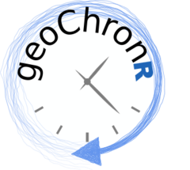
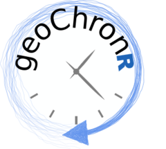

# geoChronR 
# geoChronR 
What is it?
Quantifying age uncertainties is a critical component of paleoscience (paleoclimatology, paleoecology, paleontology). geoChronR is an integrated framework that allows scientists to generate state-of-the-art age models for their records, create time-uncertain ensembles of their data, analyze those ensembles with a number of commonly-used techniques, and visualize their results in an intuitive way. The code is being developed in the open-source and community-supported R platform.
A peer-reviewed paper describing geoChronR was published in March 2021 in Geochronology, check it out here
Pre-Installation
geoChronR is a package for R, and so you’ll need R to run and install it. geoChronR should work with any version newer than 3.6.0. You can download R for your operating system here.
You’ll also need an interface to use R. Although many can work, I strongly recommend RStudio. You can download RStudio for your operating system here.
Once you have R and your interface up and running, you’ll need to install some packages. Most of this will be handled automatically, but to get started install the remotes package:
install.packages("remotes")Installation
Install package in R Studio:
remotes::install_github("nickmckay/geoChronR")Load the package into the environment:
library(geoChronR)Getting started with geoChronR
A great way to get started with geoChronR is to work through some of the tutorials avialable at the top of the geoChronR documentation page. These are also provided as “vignettes” that come installed with geoChronR, which you can access by running browseVignettes("geoChronR"). These examples run through how to create an age model ensemble, perform ensemble correlation, regression, spectral and principal components analysis, and visualize the results. They also show off some of the tools we’ve built for efficiently working with and visualizing LiPD datasets.
Once you’re ready to start applying these techniques to your new data, you’ll need one more LiPD files. Thousands of LiPD datasets are available at lipdverse.org and the World Data Service for Paleoclimatology. If you’d like to create your own dataset, the easiest way is using the lipd.net/playground. This can be a bit daunting at first, but check out the tutorial on the playground, and/or this youtube tutorial to get started.
How to Cite this Code
McKay, N. P., Emile-Geay, J., and Khider, D.: geoChronR – an R package to model, analyze, and visualize age-uncertain data, Geochronology, 3, 149–169, https://doi.org/10.5194/gchron-3-149-2021, 2021.

Contact
If you are having issues, please create an issue here, or if for some reason it’s not appropriate for the Github issue tracker let us know at nick@nau.edu.
License
The project is licensed under the MIT License